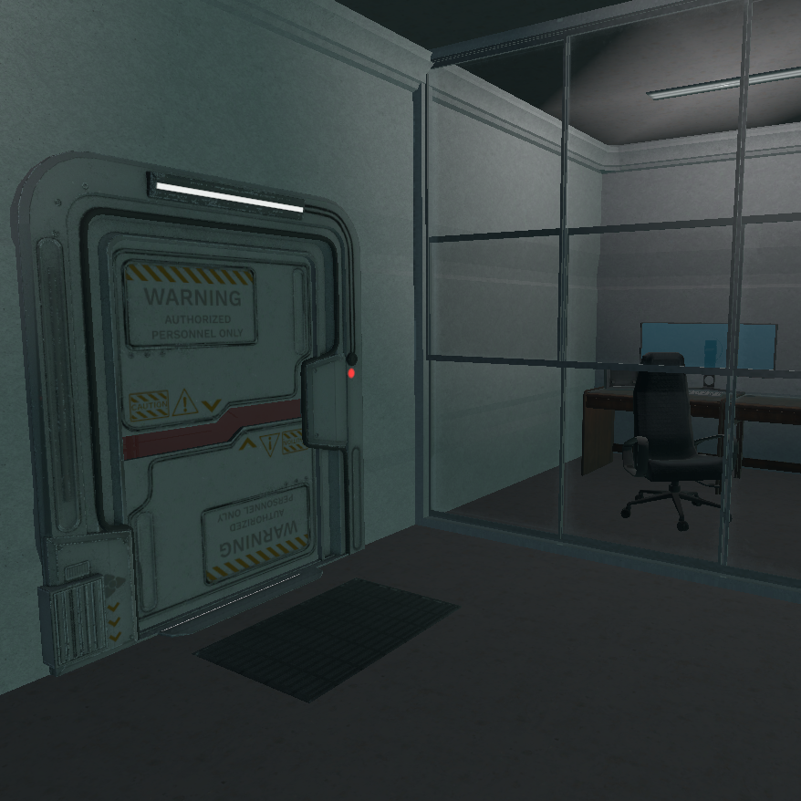

A VR Escape Room
VR Maze was an assignment meant to introduce us to Unity VR and level prototyping. In class we were taught how to use ProGrids for quick prototyping and I used it to lay out the maze. Besides that we went over how to create Simple Interactable objects. With those core tools the assignment asked us to design and build our own VR Maze with Interactable objects however we wanted. To facilitate that I set up a Ray Interactor for the left hand and a Direct Interactor for the right hand. This was so that the left hand could be used to teleport and the right hand used for interactions.
I found a great laboratory office asset set and created a basic layout. For the doors I imported a key card (added a custom shader to it too) and animated the doors to open when the keycard is placed in the correct Bubble Socket. The laser wall on the doors is shut off by flashing another key card in front of the door scanners. The first puzzle is finding the second key card to open the door and remove the laser wall. A lever, from a personal project, was used to trigger an elevator to an emergency underground bunker. It also shuts off the power to the Bubble Sockets that open the doors. Once in the underground bunker the player can grab the second key card and go back up back up to the main floor by standing on the platform. On the main floor you need to turn the lever back up to restore power to the Bubble Sockets for the doors.
Once on the main floor you should be able to get through the first door having both keycards. The second door is trickier because now you only have one key card (the other is left behind in the first Socket). You'll need to use the key card on the socket to open the physical doors, then slide the rolling shelf to keep the physical door from closing, and remove the key card to use it on the scanner to remove the laser wall on the door. The final room is now accessible and a win condition is shown when you enter the far left cubicle area. This was a really fun two day project that allowed me to do a lot more level design than I had in the past. I felt like I learned a lot and grew more confident overall. All of the assets for this project were free and are linked in the repo page below.